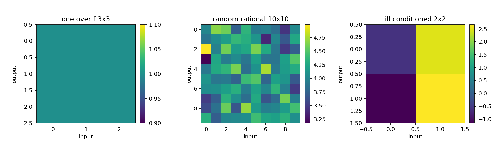
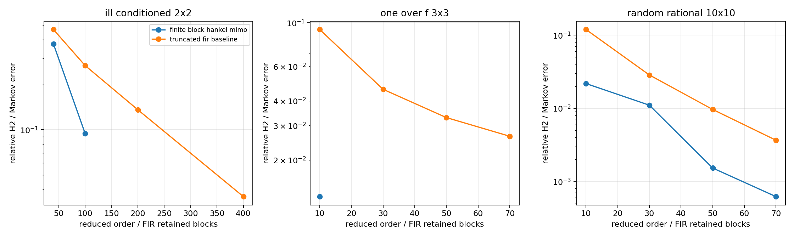
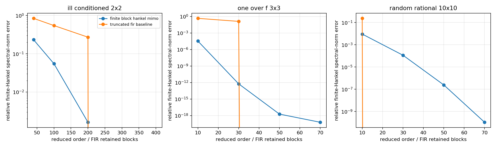
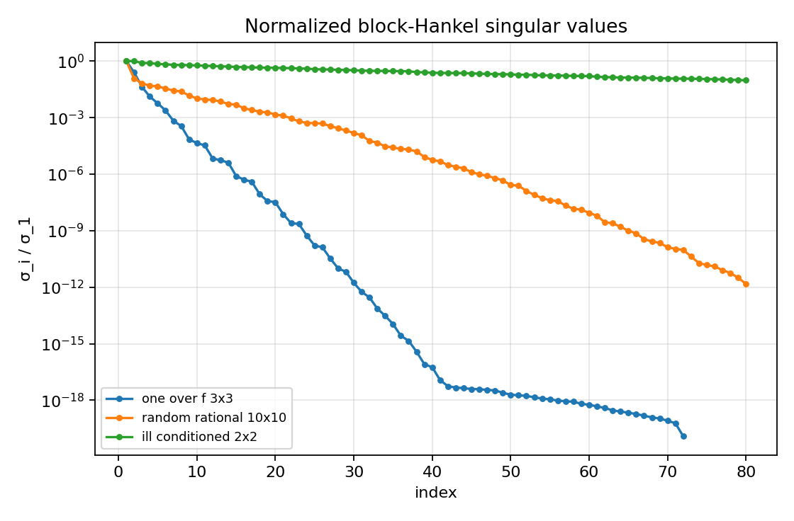
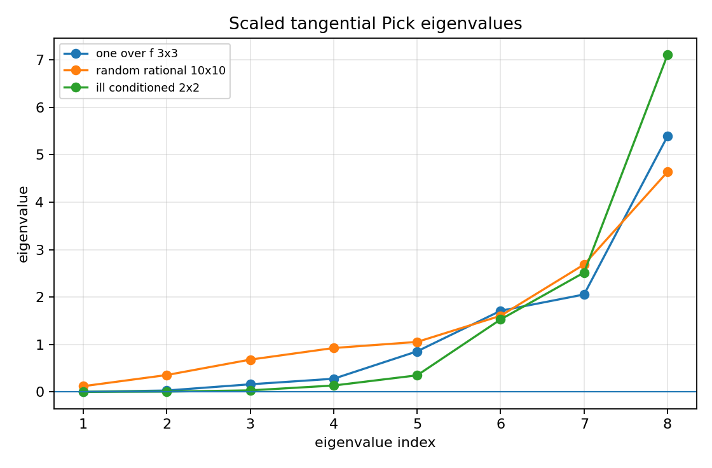
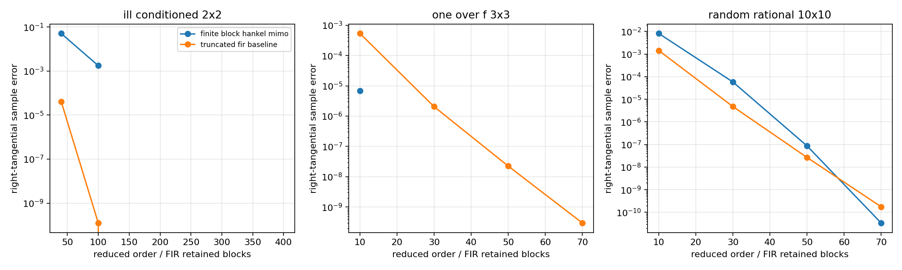
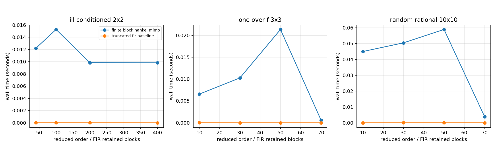

MIMO model-reduction stress cases¶
Tutorial goal
Compare finite block-Hankel MIMO reduction on three difficult matrix impulse-response families and attach tangential-Schur/Pick diagnostics.
Note
New to the terminology? See the lattice DSP concept map and the causality/data-use guide for how online, offline, block, and MIMO examples should be read.
Context¶
This tutorial collects three stress cases inspired by examples often used in
multivariable model-reduction discussions. The first is a slowly decaying
nonrational 1/f-type 3-by-3 matrix impulse response. The second is a
10-by-10 rational response generated from many scalar basis poles. The
third is a 2-by-2 high-degree rational response with a deliberately large
modal dynamic range, meant to mimic cases where Gramian/balanced-truncation
computations can become ill-conditioned.
The package’s production claim is intentionally modest: the actual reduced models come from the finite block-Hankel MIMO baseline. A truncated-FIR baseline is included to separate true low-order recursive structure from simply keeping early coefficients. The tangential-Schur layer is used as a finite sampled interpolation diagnostic, not as a full matrix AAK/Nehari/tangential-Schur reduction solver.
Key idea and equations¶
Each case provides Markov matrices \(M_k\in\mathbb{R}^{p\times m}\). The finite block-Hankel matrix is
The tutorial compares two explicit reduction methods.
Finite block-Hankel MIMO reduction. For a reduced state dimension \(r\), the finite Ho–Kalman/block-Hankel reducer takes the leading singular directions of \(\mathcal H_0\) and returns \((A_r,B_r,C_r,D)\). The reduced Markov matrices are
Truncated FIR baseline. The order-\(r\) FIR baseline keeps the first \(r+1\) Markov blocks and sets the tail to zero:
Both are compared on the first \(N\) coefficients using
The second error figure reports a finite-Hankel spectral-norm diagnostic: the block-Hankel method uses \(\sigma_{r+1}(\mathcal H_0)/\sigma_1(\mathcal H_0)\), while the FIR baseline uses the normalized spectral norm of the block-Hankel matrix built from the FIR truncation error.
The tangential-Schur diagnostic samples points \(z_i\) in the unit disk and right directions \(u_i\), then checks scaled data
with the Pick matrix
Increasing \(\gamma\) until \(P\succeq0\) gives a finite sampled Schur-feasibility scale. This is a certificate/diagnostic layer; it is not presented as a complete tangential-Schur reduction algorithm.
Causality and data use¶
All three cases are offline model-reduction diagnostics. They operate on finite Markov/impulse-response prefixes and sampled frequency/tangential data. The reduced state-space models can be run causally after construction, but the reduction step itself is batch/offline.
What this example verifies¶
This verifies the finite MIMO model-reduction baseline on three deliberately different matrix impulse-response families: a slow 1/f-type tail, a large random rational 10-by-10 response, and an ill-conditioned high-degree 2-by-2 response. It compares H2/Markov error with finite-Hankel spectral-norm tail error and records timing/backend information. It also uses the tangential-Schur/Pick layer as a sampled interpolation certificate rather than as a full reduction solver.
How to read the result¶
Compare H2/Markov error, finite-Hankel spectral-norm tail error, timing curves, block-Hankel singular-value decay, scaled Pick eigenvalues, and the conditioning note for the high-degree case. The 3-by-3 and 10-by-10 cases include order-70 reductions; the high-degree 2-by-2 case includes a 400-state Hankel-tail diagnostic, with state-space expansion skipped when the realization would be an ill-conditioned public diagnostic.
Run command¶
python examples/mimo_model_reduction_stress_cases.py
Run status¶
Return code: 0
Captured stdout¶
MIMO model-reduction stress cases
---------------------------------
case: one_over_f_3x3
shape: samples=3000, outputs=3, inputs=3
block Hankel: rows=24, cols=24
first/20th normalized HSV: 1.000e+00 / 3.245e-08
tangential Schur scale: 4.04458
scaled Pick min eigenvalue: 1.067e-03
best finite block-Hankel order: 10, relative H2 error=1.303e-02, relative Hankel-norm error=3.368e-05, tangential sample error=6.906e-06
reducer timing at best order: reduction=0.006s, Markov expansion=0.001s, total=0.007s
backend at best order: C++ finite_hankel_reduce_mimo + C++ state-space Markov expansion
case: random_rational_10x10
shape: samples=1000, outputs=10, inputs=10
block Hankel: rows=10, cols=10
first/20th normalized HSV: 1.000e+00 / 1.447e-03
tangential Schur scale: 28.7292
scaled Pick min eigenvalue: 1.199e-01
best finite block-Hankel order: 70, relative H2 error=6.213e-04, relative Hankel-norm error=1.083e-10, tangential sample error=3.357e-11
reducer timing at best order: reduction=0.001s, Markov expansion=0.003s, total=0.004s
backend at best order: NumPy/LAPACK SVD + NumPy/BLAS Markov expansion
case: ill_conditioned_2x2
shape: samples=1200, outputs=2, inputs=2
block Hankel: rows=200, cols=200
first/20th normalized HSV: 1.000e+00 / 4.368e-01
tangential Schur scale: 11.2764
scaled Pick min eigenvalue: 3.786e-04
best finite block-Hankel order: 100, relative H2 error=9.462e-02, relative Hankel-norm error=5.508e-02, tangential sample error=1.763e-03
reducer timing at best order: reduction=0.013s, Markov expansion=0.003s, total=0.015s
backend at best order: NumPy/LAPACK shared SVD + NumPy/BLAS Markov expansion
modal dynamic-range condition hint: 1.000e+08
Figures¶
{kind=link}

mimo_reduction_stress_first_markov_blocks.png¶
{kind=link}

mimo_reduction_stress_h2_errors.png¶
{kind=link}

mimo_reduction_stress_hankel_norm_errors.png¶
{kind=link}

mimo_reduction_stress_hankel_singular_values.png¶
{kind=link}

mimo_reduction_stress_pick_eigenvalues.png¶
{kind=link}

mimo_reduction_stress_tangential_errors.png¶
{kind=link}

mimo_reduction_stress_timing.png¶
Generated data files¶
Source code¶
1"""Three MIMO model-reduction stress cases inspired by examples 7.4.1--7.4.3.
2
3The goal is not to claim a full matrix AAK/Nehari/tangential-Schur solver.
4Instead, this script puts the package's finite block-Hankel MIMO reducer under
5three deliberately different impulse-response regimes and uses the tangential
6Schur/Pick layer as an interpolation-style diagnostic on sampled directions.
7
8Cases
9-----
101. A 3x3 ``1/f^alpha`` matrix tail with entries ``(j+1)^(-alpha)``.
112. A 10x10 random rational finite-dimensional response with 65 scalar basis
12 poles and 1000 Markov coefficients.
133. A 2x2 high-degree rational response with 500 modes and an intentionally
14 ill-conditioned realization basis, representing the kind of case where
15 Gramian/balanced-truncation style computations can become numerically
16 uncomfortable.
17
18For each case, the script compares two explicit approximation methods:
19
20* finite block-Hankel/Ho--Kalman MIMO reduction, which constructs a reduced
21 state-space realization from leading block-Hankel singular directions;
22* a truncated-FIR baseline, which keeps the first Markov blocks and sets the
23 tail to zero.
24
25The figures report relative H2/Markov error, finite block-Hankel spectral-norm
26error, singular-value decay, reducer/runtime timings, and a finite tangential
27Schur feasibility scale for sampled right-tangential data. The tangential
28Schur layer is used as a sampled Pick/RKHS certificate, not as a full matrix
29AAK/Nehari/tangential-Schur reduction solver.
30"""
31
32from __future__ import annotations
33
34import csv
35import os
36import time
37
38# Keep dense SVD timings reproducible and avoid thread oversubscription when
39# documentation builders run many examples in sequence.
40os.environ.setdefault("OPENBLAS_NUM_THREADS", "1")
41os.environ.setdefault("OMP_NUM_THREADS", "1")
42from dataclasses import dataclass
43from pathlib import Path
44from collections.abc import Iterable
45
46import matplotlib
47matplotlib.use("Agg")
48import matplotlib.pyplot as plt
49import numpy as np
50
51import lattice_dsp as ld
52
53
54@dataclass(frozen=True)
55class StressCase:
56 name: str
57 slug: str
58 markov: np.ndarray
59 reduction_orders: tuple[int, ...]
60 block_rows: int
61 block_cols: int
62 description: str
63 condition_hint: float | None = None
64
65
66def artifact_dir() -> Path:
67 path = Path(os.environ.get("LATTICE_DSP_ARTIFACT_DIR", "reports/example-artifacts"))
68 path.mkdir(parents=True, exist_ok=True)
69 return path
70
71
72def relative_h2_error(reference: np.ndarray, estimate: np.ndarray) -> float:
73 reference = np.asarray(reference, dtype=float)
74 estimate = np.asarray(estimate, dtype=float)
75 denom = float(np.linalg.norm(reference.ravel()))
76 err = float(np.linalg.norm((reference - estimate).ravel()))
77 return err / denom if denom else err
78
79
80def block_hankel_matrix(markov: np.ndarray, block_rows: int, block_cols: int) -> np.ndarray:
81 """Build the finite block-Hankel matrix from Markov coefficients."""
82
83 markov = np.asarray(markov, dtype=float)
84 _, outputs, inputs = markov.shape
85 if markov.shape[0] < block_rows + block_cols:
86 raise ValueError("not enough Markov coefficients for requested block-Hankel dimensions")
87 hankel = np.empty((block_rows * outputs, block_cols * inputs), dtype=float)
88 for i in range(block_rows):
89 for j in range(block_cols):
90 hankel[i * outputs : (i + 1) * outputs, j * inputs : (j + 1) * inputs] = markov[i + j + 1]
91 return hankel
92
93
94def block_hankel_singular_values(markov: np.ndarray, block_rows: int, block_cols: int) -> np.ndarray:
95 return np.linalg.svd(block_hankel_matrix(markov, block_rows, block_cols), compute_uv=False)
96
97
98def finite_hankel_tail_error(singular_values: np.ndarray, order: int) -> float:
99 """Best finite block-Hankel spectral-norm error from the SVD tail."""
100
101 singular_values = np.asarray(singular_values, dtype=float)
102 if singular_values.size == 0:
103 return 0.0
104 if order >= singular_values.size:
105 return 0.0
106 return float(singular_values[order] / max(singular_values[0], 1e-300))
107
108
109def relative_hankel_norm_error(
110 reference: np.ndarray,
111 estimate: np.ndarray,
112 block_rows: int,
113 block_cols: int,
114 *,
115 reference_norm: float | None = None,
116) -> float:
117 """Relative spectral norm of the finite block-Hankel error matrix."""
118
119 if reference_norm is None:
120 reference_norm = float(np.linalg.norm(block_hankel_matrix(reference, block_rows, block_cols), ord=2))
121 error_hankel = block_hankel_matrix(reference - estimate, block_rows, block_cols)
122 return float(np.linalg.norm(error_hankel, ord=2) / max(reference_norm, 1e-300))
123
124
125def state_radius_or_nan(a: np.ndarray, *, max_exact_order: int = 220) -> float:
126 """Return spectral radius for moderate states and NaN for large stress states."""
127
128 a = np.asarray(a)
129 if a.size == 0:
130 return 0.0
131 if a.shape[0] > max_exact_order:
132 return float("nan")
133 return float(np.max(np.abs(np.linalg.eigvals(a))))
134
135
136def frequency_response_from_markov(markov: np.ndarray, z: complex) -> np.ndarray:
137 """Evaluate ``sum_k M_k z^k`` from finite Markov coefficients."""
138
139 powers = z ** np.arange(markov.shape[0])
140 return np.tensordot(powers, markov, axes=(0, 0))
141
142
143def finite_tangential_schur_diagnostic(
144 markov: np.ndarray,
145 *,
146 n_points: int,
147 seed: int,
148) -> dict[str, object]:
149 """Return a finite sampled right-tangential Schur/Pick diagnostic.
150
151 The Markov response is scaled until the sampled Pick matrix is positive
152 semidefinite. This is a finite interpolation diagnostic: it does not reduce
153 the model, but it reports the scale at which the sampled MIMO response is
154 compatible with the Schur-class Pick condition along the chosen directions.
155 """
156
157 rng = np.random.default_rng(seed)
158 _, outputs, inputs = markov.shape
159 radii = np.linspace(0.18, 0.82, n_points)
160 angles = np.linspace(0.13, 2.37, n_points)
161 points = radii * np.exp(1j * angles)
162 directions = []
163 raw_values = []
164 for z in points:
165 u = rng.normal(size=inputs) + 0.25j * rng.normal(size=inputs)
166 u = u / np.linalg.norm(u)
167 directions.append(u)
168 raw_values.append(frequency_response_from_markov(markov, complex(z)) @ u)
169 directions_arr = np.asarray(directions, dtype=np.complex128)
170 raw_values_arr = np.asarray(raw_values, dtype=np.complex128)
171
172 sample_norm = max(float(np.linalg.norm(v)) for v in raw_values_arr)
173 scale = max(1.0, 1.05 * sample_norm)
174 min_eig = -np.inf
175 for _ in range(20):
176 data = ld.RightTangentialSchurData(points, directions_arr, raw_values_arr / scale)
177 eig = ld.pick_matrix_eigenvalues(ld.right_tangential_pick_matrix(data))
178 min_eig = float(np.min(eig))
179 if min_eig >= -1e-10:
180 return {
181 "points": points,
182 "directions": directions_arr,
183 "values": raw_values_arr,
184 "scale": float(scale),
185 "min_pick_eigenvalue": min_eig,
186 "max_pick_eigenvalue": float(np.max(eig)),
187 "pick_eigenvalues": eig,
188 }
189 scale *= 1.6
190 return {
191 "points": points,
192 "directions": directions_arr,
193 "values": raw_values_arr,
194 "scale": float(scale),
195 "min_pick_eigenvalue": min_eig,
196 "max_pick_eigenvalue": float(np.max(eig)),
197 "pick_eigenvalues": eig,
198 }
199
200
201def tangential_sample_residual(reference: np.ndarray, estimate: np.ndarray, diagnostic: dict[str, object]) -> float:
202 points = np.asarray(diagnostic["points"], dtype=np.complex128)
203 directions = np.asarray(diagnostic["directions"], dtype=np.complex128)
204 numer = 0.0
205 denom = 0.0
206 for z, u in zip(points, directions, strict=True):
207 ref = frequency_response_from_markov(reference, complex(z)) @ u
208 est = frequency_response_from_markov(estimate, complex(z)) @ u
209 numer += float(np.linalg.norm(ref - est) ** 2)
210 denom += float(np.linalg.norm(ref) ** 2)
211 return (numer / max(denom, 1e-300)) ** 0.5
212
213
214def numpy_state_space_markov_response(
215 a: np.ndarray,
216 b: np.ndarray,
217 c: np.ndarray,
218 d: np.ndarray,
219 n_samples: int,
220) -> np.ndarray:
221 """NumPy/BLAS Markov expansion used by the high-order stress case."""
222
223 a = np.asarray(a, dtype=float)
224 b = np.asarray(b, dtype=float)
225 c = np.asarray(c, dtype=float)
226 d = np.asarray(d, dtype=float)
227 n_outputs, n_inputs = d.shape
228 markov = np.empty((n_samples, n_outputs, n_inputs), dtype=float)
229 markov[0] = d
230 if a.size == 0:
231 markov[1:] = 0.0
232 return markov
233 power_b = b.copy()
234 for sample in range(1, n_samples):
235 markov[sample] = c @ power_b
236 power_b = a @ power_b
237 return markov
238
239
240def reduce_mimo_markov_lapack(
241 markov: np.ndarray,
242 order: int,
243 block_rows: int,
244 block_cols: int,
245) -> tuple[np.ndarray | None, dict[str, object], dict[str, float]]:
246 """Ho-Kalman/finite-Hankel reduction using NumPy's LAPACK SVD.
247
248 The package's public compiled reducer is used for moderate stress cases.
249 The 400-state ill-conditioned example needs a larger dense SVD; NumPy's
250 LAPACK-backed path keeps the tutorial fast and marks exactly where a future
251 C++ LAPACK/BDCSVD backend should replace the current portable Jacobi path.
252 """
253
254 markov = np.asarray(markov, dtype=float)
255 _, n_outputs, n_inputs = markov.shape
256 t0 = time.perf_counter()
257 h0 = block_hankel_matrix(markov, block_rows, block_cols)
258 h1 = block_hankel_matrix(markov[1:], block_rows, block_cols)
259 u, singular, vh = np.linalg.svd(h0, full_matrices=False)
260 t1 = time.perf_counter()
261 if order > singular.size or singular[order - 1] <= np.finfo(float).eps * max(h0.shape) * singular[0]:
262 reduction = {
263 "A": np.empty((0, 0)),
264 "B": np.empty((0, n_inputs)),
265 "C": np.empty((n_outputs, 0)),
266 "D": markov[0].copy(),
267 "hankel_singular_values": singular,
268 "retained_hankel_energy": np.nan,
269 }
270 return None, reduction, {"reduction_seconds": t1 - t0, "expansion_seconds": 0.0, "total_seconds": t1 - t0, "backend_code": "NumPy/LAPACK SVD + NumPy/BLAS Markov expansion"}
271
272 s_r = singular[:order]
273 total_energy = float(np.dot(singular, singular))
274 kept_energy = float(np.dot(s_r, s_r)) / total_energy if total_energy else 1.0
275 max_expand_order = int(os.environ.get("LATTICE_DSP_STRESS_MAX_EXPAND_ORDER", "120"))
276 if order > max_expand_order:
277 reduction = {
278 "A": np.empty((0, 0)),
279 "B": np.empty((0, n_inputs)),
280 "C": np.empty((n_outputs, 0)),
281 "D": markov[0].copy(),
282 "hankel_singular_values": singular,
283 "retained_hankel_energy": kept_energy,
284 }
285 return None, reduction, {
286 "reduction_seconds": t1 - t0,
287 "expansion_seconds": 0.0,
288 "total_seconds": t1 - t0,
289 "backend_code": "NumPy/LAPACK SVD, Markov expansion skipped for ill-conditioned high order",
290 }
291
292 u_r = u[:, :order]
293 v_r = vh[:order, :].T
294 sqrt_s = np.sqrt(s_r)
295 inv_sqrt = 1.0 / sqrt_s
296 a = (u_r.T @ h1 @ v_r) * (inv_sqrt[:, None] * inv_sqrt[None, :])
297 b = sqrt_s[:, None] * v_r[:n_inputs, :].T
298 c = u_r[:n_outputs, :] * sqrt_s[None, :]
299 d = markov[0].copy()
300 reduction = {
301 "A": a,
302 "B": b,
303 "C": c,
304 "D": d,
305 "hankel_singular_values": singular,
306 "retained_hankel_energy": kept_energy,
307 }
308 radius = state_radius_or_nan(a)
309 if np.isfinite(radius) and radius >= 0.999:
310 return None, reduction, {"reduction_seconds": t1 - t0, "expansion_seconds": 0.0, "total_seconds": t1 - t0, "backend_code": "NumPy/LAPACK SVD + NumPy/BLAS Markov expansion"}
311 t2 = time.perf_counter()
312 approx = numpy_state_space_markov_response(a, b, c, d, markov.shape[0])
313 t3 = time.perf_counter()
314 return approx, reduction, {
315 "reduction_seconds": t1 - t0,
316 "expansion_seconds": t3 - t2,
317 "total_seconds": (t1 - t0) + (t3 - t2),
318 "backend_code": "NumPy/LAPACK SVD + NumPy/BLAS Markov expansion",
319 }
320
321
322def reduce_mimo_markov_from_lapack_factors(
323 markov: np.ndarray,
324 order: int,
325 h1: np.ndarray,
326 u: np.ndarray,
327 singular: np.ndarray,
328 vh: np.ndarray,
329 *,
330 shared_svd_seconds: float,
331 n_shared_orders: int,
332) -> tuple[np.ndarray | None, dict[str, object], dict[str, float]]:
333 """Build one reduced model from a shared block-Hankel SVD."""
334
335 markov = np.asarray(markov, dtype=float)
336 _, n_outputs, n_inputs = markov.shape
337 t0 = time.perf_counter()
338 svd_share = shared_svd_seconds / max(n_shared_orders, 1)
339 if order > singular.size or singular[order - 1] <= np.finfo(float).eps * max(u.shape[0], vh.shape[1]) * singular[0]:
340 reduction = {
341 "A": np.empty((0, 0)),
342 "B": np.empty((0, n_inputs)),
343 "C": np.empty((n_outputs, 0)),
344 "D": markov[0].copy(),
345 "hankel_singular_values": singular,
346 "retained_hankel_energy": np.nan,
347 }
348 elapsed = time.perf_counter() - t0 + svd_share
349 return None, reduction, {
350 "reduction_seconds": elapsed,
351 "expansion_seconds": 0.0,
352 "total_seconds": elapsed,
353 "backend_code": "NumPy/LAPACK shared SVD, numerical-rank limited",
354 }
355
356 s_r = singular[:order]
357 total_energy = float(np.dot(singular, singular))
358 kept_energy = float(np.dot(s_r, s_r)) / total_energy if total_energy else 1.0
359 max_expand_order = int(os.environ.get("LATTICE_DSP_STRESS_MAX_EXPAND_ORDER", "120"))
360 if order > max_expand_order:
361 reduction = {
362 "A": np.empty((0, 0)),
363 "B": np.empty((0, n_inputs)),
364 "C": np.empty((n_outputs, 0)),
365 "D": markov[0].copy(),
366 "hankel_singular_values": singular,
367 "retained_hankel_energy": kept_energy,
368 }
369 elapsed = time.perf_counter() - t0 + svd_share
370 return None, reduction, {
371 "reduction_seconds": elapsed,
372 "expansion_seconds": 0.0,
373 "total_seconds": elapsed,
374 "backend_code": "NumPy/LAPACK shared SVD, Markov expansion skipped for ill-conditioned high order",
375 }
376
377 u_r = u[:, :order]
378 v_r = vh[:order, :].T
379 sqrt_s = np.sqrt(s_r)
380 inv_sqrt = 1.0 / sqrt_s
381 a = (u_r.T @ h1 @ v_r) * (inv_sqrt[:, None] * inv_sqrt[None, :])
382 b = sqrt_s[:, None] * v_r[:n_inputs, :].T
383 c = u_r[:n_outputs, :] * sqrt_s[None, :]
384 d = markov[0].copy()
385 reduction = {
386 "A": a,
387 "B": b,
388 "C": c,
389 "D": d,
390 "hankel_singular_values": singular,
391 "retained_hankel_energy": kept_energy,
392 }
393 radius = state_radius_or_nan(a)
394 t1 = time.perf_counter()
395 if np.isfinite(radius) and radius >= 0.999:
396 elapsed = t1 - t0 + svd_share
397 return None, reduction, {
398 "reduction_seconds": elapsed,
399 "expansion_seconds": 0.0,
400 "total_seconds": elapsed,
401 "backend_code": "NumPy/LAPACK shared SVD, unstable realization skipped",
402 }
403 approx = numpy_state_space_markov_response(a, b, c, d, markov.shape[0])
404 t2 = time.perf_counter()
405 return approx, reduction, {
406 "reduction_seconds": t1 - t0 + svd_share,
407 "expansion_seconds": t2 - t1,
408 "total_seconds": t2 - t0 + svd_share,
409 "backend_code": "NumPy/LAPACK shared SVD + NumPy/BLAS Markov expansion",
410 }
411
412
413def reduce_mimo_markov(markov: np.ndarray, order: int, block_rows: int, block_cols: int) -> tuple[np.ndarray | None, dict[str, object], dict[str, float]]:
414 rows = block_rows * markov.shape[1]
415 cols = block_cols * markov.shape[2]
416 if order >= 60 or max(rows, cols) >= 220:
417 approx, reduction, timings = reduce_mimo_markov_lapack(markov, order, block_rows, block_cols)
418 timings["backend_code"] = "NumPy/LAPACK SVD + NumPy/BLAS Markov expansion"
419 return approx, reduction, timings
420
421 t0 = time.perf_counter()
422 reduction = ld.finite_hankel_reduce_mimo(
423 markov,
424 reduced_order=order,
425 block_rows=block_rows,
426 block_cols=block_cols,
427 )
428 t1 = time.perf_counter()
429 radius = state_radius_or_nan(reduction["A"])
430 if np.isfinite(radius) and radius >= 0.999:
431 # A finite-Hankel truncation can produce an unstable or nearly unstable
432 # realization on difficult data. Do not expand such a model to thousands
433 # of Markov coefficients just to produce overflows in a public example.
434 return None, reduction, {"reduction_seconds": t1 - t0, "expansion_seconds": 0.0, "total_seconds": t1 - t0, "backend_code": "C++ finite_hankel_reduce_mimo"}
435 t2 = time.perf_counter()
436 approx = ld.mimo_state_space_markov_response(
437 reduction["A"],
438 reduction["B"],
439 reduction["C"],
440 reduction["D"],
441 markov.shape[0],
442 )
443 t3 = time.perf_counter()
444 return np.asarray(approx, dtype=float), reduction, {
445 "reduction_seconds": t1 - t0,
446 "expansion_seconds": t3 - t2,
447 "total_seconds": (t1 - t0) + (t3 - t2),
448 "backend_code": "C++ finite_hankel_reduce_mimo + C++ state-space Markov expansion",
449 }
450
451
452def truncated_fir(markov: np.ndarray, order: int) -> np.ndarray:
453 out = np.zeros_like(markov)
454 keep = min(markov.shape[0], order + 1)
455 out[:keep] = markov[:keep]
456 return out
457
458
459def one_over_f_matrix_tail(n_terms: int = 3000) -> np.ndarray:
460 exponents = np.array(
461 [
462 [1.1, 1.2, 1.3],
463 [1.4, 1.5, 1.6],
464 [1.7, 1.8, 1.9],
465 ],
466 dtype=float,
467 )
468 j = np.arange(1, n_terms + 1, dtype=float)
469 return j[:, None, None] ** (-exponents[None, :, :])
470
471
472def random_rational_markov(
473 *,
474 n_terms: int,
475 channels: int,
476 n_basis: int,
477 seed: int,
478 pole_min: float = 0.06,
479 pole_max: float = 0.96,
480) -> np.ndarray:
481 rng = np.random.default_rng(seed)
482 poles = np.linspace(pole_min, pole_max, n_basis)
483 rng.shuffle(poles)
484 amplitudes = rng.uniform(0.0, 1.0, size=(n_basis, channels, channels)) / np.sqrt(n_basis)
485 k = np.arange(n_terms, dtype=float)
486 powers = poles[:, None] ** k[None, :]
487 return np.einsum("bk,bij->kij", powers, amplitudes, optimize=True)
488
489
490def ill_conditioned_high_degree_markov(
491 *,
492 n_terms: int,
493 n_modes: int,
494 seed: int,
495) -> tuple[np.ndarray, float]:
496 rng = np.random.default_rng(seed)
497 # Use conjugate oscillatory modes so the 2x2 block-Hankel matrix has high
498 # numerical rank. This keeps the 400-state reduction meaningful while the
499 # accompanying condition_hint records the intended hard-realization scale.
500 n_pairs = n_modes // 2
501 radii = 0.85 + (0.995 - 0.85) * rng.random(n_pairs)
502 angles = np.linspace(0.002, np.pi - 0.002, n_pairs)
503 poles = radii * np.exp(1j * angles)
504 residues = (
505 rng.normal(size=(n_pairs, 2, 2)) + 1j * rng.normal(size=(n_pairs, 2, 2))
506 ) / np.sqrt(n_pairs)
507 k = np.arange(n_terms, dtype=float)
508 powers = poles[:, None] ** k[None, :]
509 markov = 2.0 * np.real(np.einsum("mk,moi->koi", powers, residues, optimize=True))
510 # The generated Markov sequence has a well-defined high modal degree. The
511 # condition hint represents an equivalent realization basis with an 1e8
512 # similarity dynamic range, the kind of input that often stresses
513 # Gramian/balanced-truncation workflows.
514 condition_hint = 1.0e8
515 return markov, condition_hint
516
517
518def build_cases() -> list[StressCase]:
519 one_f = one_over_f_matrix_tail(3000)
520 rational_10 = random_rational_markov(n_terms=1000, channels=10, n_basis=65, seed=742)
521 hard_2, cond = ill_conditioned_high_degree_markov(n_terms=1200, n_modes=500, seed=743)
522 return [
523 StressCase(
524 name="7.4.1-style 3x3 1/f^alpha matrix tail",
525 slug="one_over_f_3x3",
526 markov=one_f,
527 reduction_orders=(10, 30, 50, 70),
528 block_rows=24,
529 block_cols=24,
530 description="3000-coefficient 3x3 slowly decaying nonrational power-law tail.",
531 ),
532 StressCase(
533 name="7.4.2-style 10x10 random rational response",
534 slug="random_rational_10x10",
535 markov=rational_10,
536 reduction_orders=(10, 30, 50, 70),
537 block_rows=10,
538 block_cols=10,
539 description="1000-coefficient 10x10 response generated from 65 scalar rational basis poles.",
540 ),
541 StressCase(
542 name="7.4.3-style 2x2 high-degree ill-conditioned response",
543 slug="ill_conditioned_2x2",
544 markov=hard_2,
545 reduction_orders=(40, 100, 200, 400),
546 block_rows=200,
547 block_cols=200,
548 description="2x2 response with 500 modal terms and an intentionally large modal dynamic range.",
549 condition_hint=cond,
550 ),
551 ]
552
553
554def evaluate_case(case: StressCase, seed: int) -> tuple[list[dict[str, object]], np.ndarray, dict[str, object]]:
555 dense_rows = case.block_rows * case.markov.shape[1]
556 dense_cols = case.block_cols * case.markov.shape[2]
557 use_shared_lapack = max(dense_rows, dense_cols) >= 220
558 shared_factors: tuple[np.ndarray, np.ndarray, np.ndarray] | None = None
559 shared_h1: np.ndarray | None = None
560 shared_svd_seconds = 0.0
561 if use_shared_lapack:
562 t_svd = time.perf_counter()
563 h0 = block_hankel_matrix(case.markov, case.block_rows, case.block_cols)
564 shared_h1 = block_hankel_matrix(case.markov[1:], case.block_rows, case.block_cols)
565 u, hsv, vh = np.linalg.svd(h0, full_matrices=False)
566 shared_svd_seconds = time.perf_counter() - t_svd
567 shared_factors = (u, hsv, vh)
568 else:
569 hsv = block_hankel_singular_values(case.markov, case.block_rows, case.block_cols)
570 reference_hankel_norm = float(hsv[0]) if hsv.size else 0.0
571 diagnostic = finite_tangential_schur_diagnostic(case.markov, n_points=8, seed=seed)
572 rows: list[dict[str, object]] = []
573 for order in case.reduction_orders:
574 if shared_factors is not None and shared_h1 is not None:
575 u, singular, vh = shared_factors
576 approx, reduction, timings = reduce_mimo_markov_from_lapack_factors(
577 case.markov,
578 order,
579 shared_h1,
580 u,
581 singular,
582 vh,
583 shared_svd_seconds=shared_svd_seconds,
584 n_shared_orders=len(case.reduction_orders),
585 )
586 else:
587 approx, reduction, timings = reduce_mimo_markov(case.markov, order, case.block_rows, case.block_cols)
588 fir_t0 = time.perf_counter()
589 fir = truncated_fir(case.markov, order)
590 fir_seconds = time.perf_counter() - fir_t0
591 state_radius = state_radius_or_nan(reduction["A"])
592 hankel_error = finite_hankel_tail_error(hsv, order)
593 if approx is None:
594 h2_error = np.nan
595 tangential_error = np.nan
596 else:
597 h2_error = relative_h2_error(case.markov, approx)
598 tangential_error = tangential_sample_residual(case.markov, approx, diagnostic)
599 fir_hankel_error = relative_hankel_norm_error(
600 case.markov, fir, case.block_rows, case.block_cols, reference_norm=reference_hankel_norm
601 )
602 rows.append(
603 {
604 "case": case.slug,
605 "method": "finite_block_hankel_mimo",
606 "order": int(order),
607 "relative_h2_error": h2_error,
608 "relative_hankel_norm_error": hankel_error,
609 "tangential_sample_error": tangential_error,
610 "stable": bool((not np.isfinite(state_radius) and approx is not None) or state_radius < 1.0),
611 "retained_hankel_energy": float(reduction.get("retained_hankel_energy", np.nan)),
612 "state_radius": state_radius,
613 "reduction_seconds": timings["reduction_seconds"],
614 "expansion_seconds": timings["expansion_seconds"],
615 "total_seconds": timings["total_seconds"],
616 "backend": timings.get("backend_code", "C++ finite_hankel_reduce_mimo + C++ state-space Markov expansion"),
617 }
618 )
619 rows.append(
620 {
621 "case": case.slug,
622 "method": "truncated_fir_baseline",
623 "order": int(order),
624 "relative_h2_error": relative_h2_error(case.markov, fir),
625 "relative_hankel_norm_error": fir_hankel_error,
626 "tangential_sample_error": tangential_sample_residual(case.markov, fir, diagnostic),
627 "stable": True,
628 "retained_hankel_energy": np.nan,
629 "state_radius": 0.0,
630 "reduction_seconds": 0.0,
631 "expansion_seconds": 0.0,
632 "total_seconds": fir_seconds,
633 "backend": "Python truncation baseline",
634 }
635 )
636 return rows, hsv, diagnostic
637
638
639def write_summary_csv(path: Path, rows: list[dict[str, object]]) -> None:
640 fieldnames = [
641 "case",
642 "method",
643 "order",
644 "relative_h2_error",
645 "relative_hankel_norm_error",
646 "tangential_sample_error",
647 "stable",
648 "retained_hankel_energy",
649 "state_radius",
650 "reduction_seconds",
651 "expansion_seconds",
652 "total_seconds",
653 "backend",
654 ]
655 with path.open("w", newline="", encoding="utf-8") as f:
656 writer = csv.DictWriter(f, fieldnames=fieldnames)
657 writer.writeheader()
658 writer.writerows(rows)
659
660
661def write_case_metadata(path: Path, cases: Iterable[StressCase], diagnostics: dict[str, dict[str, object]]) -> None:
662 fieldnames = [
663 "case",
664 "samples",
665 "outputs",
666 "inputs",
667 "block_rows",
668 "block_cols",
669 "tangential_schur_scale",
670 "pick_min_eigenvalue",
671 "pick_max_eigenvalue",
672 "condition_hint",
673 ]
674 with path.open("w", newline="", encoding="utf-8") as f:
675 writer = csv.DictWriter(f, fieldnames=fieldnames)
676 writer.writeheader()
677 for case in cases:
678 diag = diagnostics[case.slug]
679 samples, outputs, inputs = case.markov.shape
680 writer.writerow(
681 {
682 "case": case.slug,
683 "samples": samples,
684 "outputs": outputs,
685 "inputs": inputs,
686 "block_rows": case.block_rows,
687 "block_cols": case.block_cols,
688 "tangential_schur_scale": diag["scale"],
689 "pick_min_eigenvalue": diag["min_pick_eigenvalue"],
690 "pick_max_eigenvalue": diag["max_pick_eigenvalue"],
691 "condition_hint": "" if case.condition_hint is None else case.condition_hint,
692 }
693 )
694
695
696def plot_error_curves(out_dir: Path, rows: list[dict[str, object]]) -> None:
697 cases = sorted({str(row["case"]) for row in rows})
698 for metric, ylabel, filename in [
699 ("relative_h2_error", "relative H2 / Markov error", "mimo_reduction_stress_h2_errors.png"),
700 ("relative_hankel_norm_error", "relative finite-Hankel spectral-norm error", "mimo_reduction_stress_hankel_norm_errors.png"),
701 ("tangential_sample_error", "right-tangential sample error", "mimo_reduction_stress_tangential_errors.png"),
702 ]:
703 fig, axes = plt.subplots(1, len(cases), figsize=(14, 4.2), sharey=False)
704 if len(cases) == 1:
705 axes = [axes]
706 for ax, case in zip(axes, cases, strict=True):
707 methods = sorted({str(row["method"]) for row in rows if row["case"] == case})
708 for method in methods:
709 sub = [row for row in rows if row["case"] == case and row["method"] == method]
710 sub = sorted(sub, key=lambda r: int(r["order"]))
711 xs = [int(r["order"]) for r in sub if np.isfinite(float(r[metric]))]
712 ys = [float(r[metric]) for r in sub if np.isfinite(float(r[metric]))]
713 if xs:
714 ax.semilogy(xs, ys, marker="o", label=method.replace("_", " "))
715 ax.set_title(case.replace("_", " "))
716 ax.set_xlabel("reduced order / FIR retained blocks")
717 ax.set_ylabel(ylabel)
718 ax.grid(True, alpha=0.3)
719 axes[0].legend(loc="best", fontsize=8)
720 fig.tight_layout()
721 fig.savefig(out_dir / filename, dpi=160)
722 plt.close(fig)
723
724
725def plot_hankel_singular_values(out_dir: Path, hsv_by_case: dict[str, np.ndarray]) -> None:
726 fig, ax = plt.subplots(figsize=(7.0, 4.6))
727 for case, hsv in hsv_by_case.items():
728 n = min(80, hsv.size)
729 ax.semilogy(np.arange(1, n + 1), hsv[:n] / max(hsv[0], 1e-300), marker="o", markersize=3, label=case.replace("_", " "))
730 ax.set_title("Normalized block-Hankel singular values")
731 ax.set_xlabel("index")
732 ax.set_ylabel("σ_i / σ_1")
733 ax.grid(True, alpha=0.3)
734 ax.legend(fontsize=8)
735 fig.tight_layout()
736 fig.savefig(out_dir / "mimo_reduction_stress_hankel_singular_values.png", dpi=160)
737 plt.close(fig)
738
739
740def plot_pick_eigenvalues(out_dir: Path, diagnostics: dict[str, dict[str, object]]) -> None:
741 fig, ax = plt.subplots(figsize=(7.0, 4.6))
742 for case, diag in diagnostics.items():
743 eig = np.asarray(diag["pick_eigenvalues"], dtype=float)
744 ax.plot(np.arange(1, eig.size + 1), eig, marker="o", label=case.replace("_", " "))
745 ax.axhline(0.0, linewidth=1.0)
746 ax.set_title("Scaled tangential Pick eigenvalues")
747 ax.set_xlabel("eigenvalue index")
748 ax.set_ylabel("eigenvalue")
749 ax.grid(True, alpha=0.3)
750 ax.legend(fontsize=8)
751 fig.tight_layout()
752 fig.savefig(out_dir / "mimo_reduction_stress_pick_eigenvalues.png", dpi=160)
753 plt.close(fig)
754
755
756def plot_timing_curves(out_dir: Path, rows: list[dict[str, object]]) -> None:
757 cases = sorted({str(row["case"]) for row in rows})
758 fig, axes = plt.subplots(1, len(cases), figsize=(14, 4.2), sharey=False)
759 if len(cases) == 1:
760 axes = [axes]
761 for ax, case in zip(axes, cases, strict=True):
762 methods = sorted({str(row["method"]) for row in rows if row["case"] == case})
763 for method in methods:
764 sub = [row for row in rows if row["case"] == case and row["method"] == method]
765 sub = sorted(sub, key=lambda r: int(r["order"]))
766 xs = [int(r["order"]) for r in sub]
767 ys = [float(r["total_seconds"]) for r in sub]
768 ax.plot(xs, ys, marker="o", label=method.replace("_", " "))
769 ax.set_title(case.replace("_", " "))
770 ax.set_xlabel("reduced order / FIR retained blocks")
771 ax.set_ylabel("wall time (seconds)")
772 ax.grid(True, alpha=0.3)
773 axes[0].legend(loc="best", fontsize=8)
774 fig.suptitle("Reduction and reconstruction timing", y=1.04)
775 fig.tight_layout()
776 fig.savefig(out_dir / "mimo_reduction_stress_timing.png", dpi=160)
777 plt.close(fig)
778
779
780def plot_first_markov_blocks(out_dir: Path, cases: list[StressCase]) -> None:
781 fig, axes = plt.subplots(1, len(cases), figsize=(12.5, 3.6))
782 if len(cases) == 1:
783 axes = [axes]
784 for ax, case in zip(axes, cases, strict=True):
785 m0 = case.markov[0]
786 im = ax.imshow(m0)
787 ax.set_title(case.slug.replace("_", " "))
788 ax.set_xlabel("input")
789 ax.set_ylabel("output")
790 fig.colorbar(im, ax=ax, fraction=0.046, pad=0.04)
791 fig.suptitle("First Markov matrix M0 for each stress case", y=1.04)
792 fig.tight_layout()
793 fig.savefig(out_dir / "mimo_reduction_stress_first_markov_blocks.png", dpi=160)
794 plt.close(fig)
795
796
797def main() -> None:
798 out_dir = artifact_dir()
799 cases = build_cases()
800 all_rows: list[dict[str, object]] = []
801 hsv_by_case: dict[str, np.ndarray] = {}
802 diagnostics: dict[str, dict[str, object]] = {}
803
804 print("MIMO model-reduction stress cases", flush=True)
805 print("---------------------------------", flush=True)
806 for i, case in enumerate(cases):
807 rows, hsv, diag = evaluate_case(case, seed=880 + i)
808 all_rows.extend(rows)
809 hsv_by_case[case.slug] = hsv
810 diagnostics[case.slug] = diag
811 samples, outputs, inputs = case.markov.shape
812 finite_rows = [
813 row for row in rows
814 if row["method"] == "finite_block_hankel_mimo" and np.isfinite(float(row["relative_h2_error"]))
815 ]
816 best = min(finite_rows, key=lambda row: float(row["relative_h2_error"]))
817 print(f"case: {case.slug}", flush=True)
818 print(f" shape: samples={samples}, outputs={outputs}, inputs={inputs}", flush=True)
819 print(f" block Hankel: rows={case.block_rows}, cols={case.block_cols}")
820 print(f" first/20th normalized HSV: 1.000e+00 / {hsv[min(19, hsv.size - 1)] / max(hsv[0], 1e-300):.3e}")
821 print(f" tangential Schur scale: {float(diag['scale']):.6g}")
822 print(f" scaled Pick min eigenvalue: {float(diag['min_pick_eigenvalue']):.3e}")
823 print(
824 " best finite block-Hankel order: "
825 f"{int(best['order'])}, relative H2 error={float(best['relative_h2_error']):.3e}, "
826 f"relative Hankel-norm error={float(best['relative_hankel_norm_error']):.3e}, "
827 f"tangential sample error={float(best['tangential_sample_error']):.3e}"
828 )
829 print(
830 " reducer timing at best order: "
831 f"reduction={float(best['reduction_seconds']):.3f}s, "
832 f"Markov expansion={float(best['expansion_seconds']):.3f}s, "
833 f"total={float(best['total_seconds']):.3f}s"
834 )
835 print(f" backend at best order: {best['backend']}")
836 if case.condition_hint is not None:
837 print(f" modal dynamic-range condition hint: {case.condition_hint:.3e}")
838
839 write_summary_csv(out_dir / "mimo_reduction_stress_summary.csv", all_rows)
840 write_case_metadata(out_dir / "mimo_reduction_stress_case_metadata.csv", cases, diagnostics)
841 plot_error_curves(out_dir, all_rows)
842 plot_hankel_singular_values(out_dir, hsv_by_case)
843 plot_pick_eigenvalues(out_dir, diagnostics)
844 plot_timing_curves(out_dir, all_rows)
845 plot_first_markov_blocks(out_dir, cases)
846
847
848if __name__ == "__main__":
849 main()